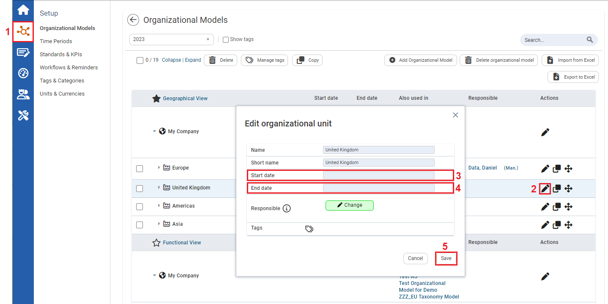

Users can input start and end dates of organizational units such as subsidiaries, investee companies, or suppliers with regards to quantitative KPIs. This can affect the weight of an organizational unit on a company based on the duration that an organizational unit is with a company.
Prior to adjusting parameters of the start and end date of an organizational unit, the Start and End Date of an Organization Unit tool needs to be enabled (see Enabling Start and End Dates of Organizational Units
To adjust parameters of the Start and End Date of an Organizational Unit

| 1 | Click the Setup icon on the left navigation panel, and then click Organizational Models. |
| 2 | To edit an Organizational Unit, click the pencil icon. The Edit Organizational Unit popup window opens. |
| 3 | On the Start date textbox input the start date. |
| 4 |
On the End date textbox input the end date. Note: If an organizational unit is still with the company, there will not be an end date inputted. |
| 5 | Click Save. |